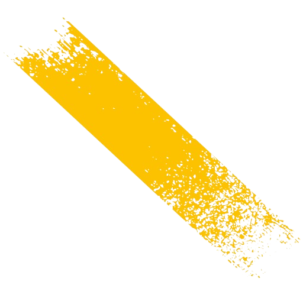
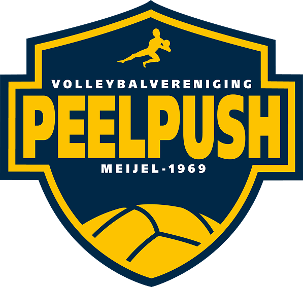
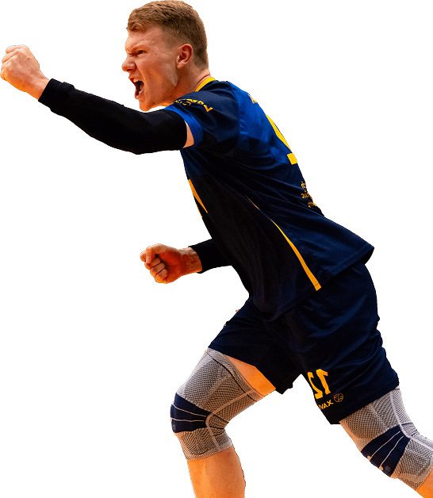
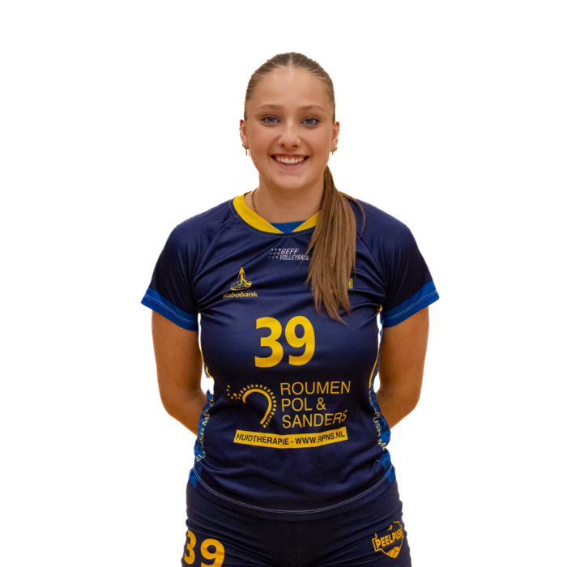
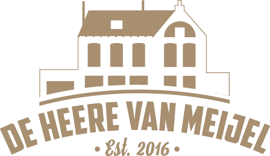
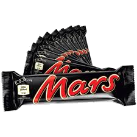
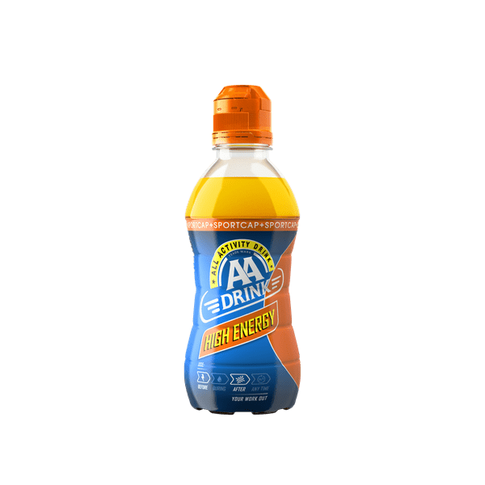
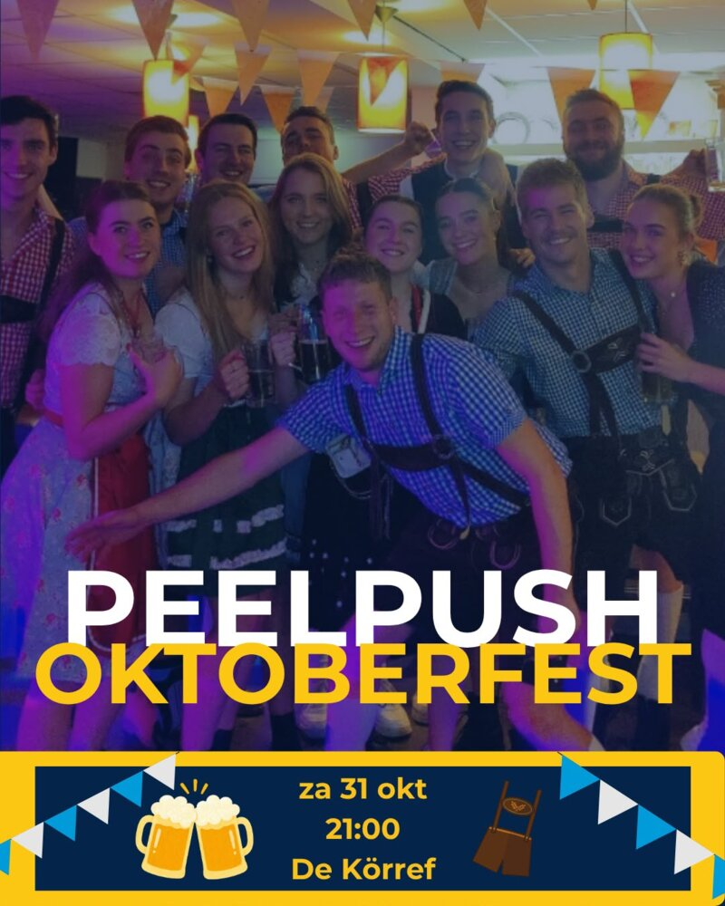

Speler van de maand
Gitte Janssen
Gitte speelt in dames 3 en is de zus van Wessel. Oom Peter zit ook bij Peelpush, leuk hè!



Gitte speelt in dames 3 en is de zus van Wessel. Oom Peter zit ook bij Peelpush, leuk hè!

Programma laden…




Uitslagen laden…